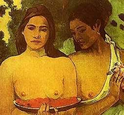

 Лукумонское знание эзотерично, что ни в малейшей мере не противоречит его возможной публичности: профаны могут слышать, но не могут услышать. Они могут полагать, что услышали, но знание имеет такую степень, когда ложится лишь на знание, техника в руках дикаря — кусок железа. Таким образом, современные лукумоны могут легко использовать для обмена информацией с себе подобными любые средства массовой информации, не опасаясь, что дикарь воспользуется их страшными заклинаниями и наломает дров. На заклинания дикарь не обратит никакого внимания, а если и обратит, то применить не сумеет, да просто не станет применять, т.к. не будет знать о самой возможности применения, а дров наломает и без того: в нынешнем уродливом мире дикарю слишком часто приходится делать недикарские вещи; на дрова идёт, практически, всё: экономика, литература, юриспруденция.
Как это получилось? Почему в коллективе, именуемом «человечество», рождённый ползать сидит в кресле и учит рождённых летать ходить строем? Почему способный лишь грузить мешки выступает в суде от имени способного лишь подметать, но торгующего недвижимостью? Почему кажущийся столь явным закон нарушается в пользу сомнительного индивидуального блага? Почему, спросите вы, сомнительного? Да потому, что этот горе-буржуа или горе-интеллигент всю жизнь чувствует себя не в своей тарелке: ему многое непонятно, он пытается упростить всё «под себя», но не каждая фигура сводима к сумме квадратов и не каждая реалия сводима к фигурам, а его мозг физиологически не может вместить что-то сложнее квадрата, да и квадрату там тесно. В идеале там вовсе должно быть пусто. Его тело должно удобно ложиться в направляющую традиции и двигаться ритуалом. Всё его существо должно совпадать с некоторой несложной функцией. Это будет подлинным для него благом.
Откуда же возьмётся данная направляющая? Возможно ли предположить, что некий естественный социальный закон, являющийся подлинным благом, существует объективно, подобно законам физики? Но как определить, какому роду деятельности предопределён тот или иной человек? Кому быть инженером, кому законодателем, а кому плотником? В отличие от общественных насекомых, у которых специализация и предназначение выражены явно морфологически, тело человека не говорит ничего более или менее однозначно о его телосе (за исключением редких и неявных случаев и уродств): когда высокому ребёнку говорят, что он должен играть в баскетбол, это следствие сомнительно, как сомнительна сама необходимость игры в баскетбол.
Некоторые (среди них Вербицкий) утверждают, что человек — существо коллективное и что не может быть (не должно?) индивидуального блага, противоречащего интересам и благу коллектива. Тут хотелось бы привлечь ещё немного зоологии. Человек — млекопитающее, примат. Какая форма групповой организации характерна для млекопитающих? Млекопитающие живут стадами, стаями, прайдами, табунами, семьями. Все эти группы похожи отсутствием чёткой специализации среди своих членов и чёткого разделения труда. Вожак, глава почти всегда есть, но постоянно должен доказывать своё право на лидерство, подвергаемое действенному сомнению со стороны почти всех членов группы. Члены группы часто дерутся между собой из-за пищи, лучшего места, полового партнёра и т.п. Эти притязания безусловно индивидуальны, но противоречат ли они интересам группы? Сильнейший выживает, сильнейший даёт потомство, сильнейший руководит. Группа от этого только выигрывает. Но группа как наименьшая значимая единица. Индивидуум как таковой не самоценен. На реализацию индивидуальных притязаний имеет право только сильный, здоровый, умный. Притязания слабого обречены на провал. Так ли у людей?
Гомеровское “арете” переводится сегодня как “добродетель”, но даже беглый обзор арете гомеровских героев (хитрость Одиссея, физическая сила Агамемнона) даёт нам понять, что речь идёт скорее о превосходствах. Нельзя сказать, чтобы эти понятия были синонимичными в героическом обществе, — нет, это было одно понятие, т.е. превосходство и было добродетелью. Как и в стаде и в стае.
Особой специализации тогда тоже не было. Царь занимался почти тем же, что и остальные, но делал это лучше.
С тех героических пор мы ушли далеко. В какой момент всё сломалось? И сломалось ли? Почему сегодня считаются ценными притязания олигофрена? И кто сможет объяснить, ценными для чего они являются? Мы говорим о самоценности личности, но что является личностью? Достаточно ли принадлежать к виду homo sapiens, чтобы претендовать на ценность своих притязаний? Необходимо ли к нему принадлежать (см. Веркор “Люди или животные”)? Можем ли мы допустить, что притязания олигофрена на равноправие (в условиях демократии фактически — на царство) могут не противоречить интересам группы, именуемой человечество? Есть ли она сегодня, эта группа?
Сегодня сложилась система, при которой землю пашет тот, чьим арете не является пахарство, и т.п.
Деятельность человека сегодня невероятно разнообразна, что породило узкую специализацию. О явной неспециализированности человеческого тела, в отличие от тела насекомого, например, мы уже говорили выше (Николай Полунин в книге “Край, где кончается радуга” предполагает морфологическое переустройство каст специалистов в далёком будущем, но это фантастка… пока?), однако кажется естественным, чтобы люди распределялись по специализациям в соответствии со своими доблестями, своими превосходствами, своими арете. Допустить, чтобы каждый сам определял свои арете нельзя по той простой причине, что ум не является арете каждого, а в деле самостоятельного выбора, анализа и понимания важен именно ум.
Каков механизм определения арете индивидуума? Простейший — состязания и экзамены. Человек, желающий заниматься деятельностью типа А, должен под наблюдением браминов и людей, преуспевших в деятельности типа А, выполнить некий минимум характерных для данной деятельности действий не худшим образом, чем некий принятый эталон.
Экзамены существуют, но… Но почему их проходят люди, не выполняющие на самом деле необходимого минимума? Потому что в сане экзаменаторов оказываются те, чьей доблестью не является ум (не честность и всякоразная принципиальность, а именно ум, т.к. только полный дурак может регулярно положительно аттестовывать дураков). Что делает возможным проникновение дураков на брахманские должности? Всё то же. Однажды это случилось, а дальше пошло по цепочке. “И достойнейшая птица станет нашею царицей… И напялила корону на такую же ворону…”
Изменить преступную ситуацию может лишь обладающий властью. Но идущие к власти сегодня вообще не держат никаких экзаменов. При демократии идущему к власти достаточно понравиться толпе, которая не способна определить подлинные доблести человека и установить соответствие этих доблестей с тем или иным видом деятельности. Таким образом, у власти находятся люди, которые не должны находиться у власти. Есть ли механизм, при помощи которого можно изменить такое положение вещей?
Если нет возможности противостоять индивидуальным притязаниям людей на должности, не соответствующие их доблестям, то нельзя ли найти способ сделать так, чтобы таких притязаний не возникало вовсе? Отвернёмся от наших родственников млекопитающих и посмотрим внимательно на насекомых: разве рабочий муравей может притязать на то, чтобы стать царицей или солдатом (и не позволим пудрить себе мозги вредными мультиками типа “Муравей Антц”)? Нет. Муравей вообще лишён притязаний. Он чист. Он сам по себе ничто, и существует лишь в группе. Традиция для него — абсолютна, она физиологична. Отсутствие притязаний обусловлено отсутствием мозга. Для выполнения небольшого набора функций хватает нескольких небольших нервных узлов. Хочется сделать из этого какие-то полезные выводы… Какие? Производство эпсилонов и альфа-плюсовиков по Хаксли? Почему-то мне кажется, что это не решение проблемы… И тоже (пока?) фантастика.
Сторонники демократии и либерализма говорят, что всё со временем сделает здоровая конкуренция. Да где она, эта самая здоровая конкуренция?? Конкуренция между одиноким талантливым юношей и агрессивным прайдом тупых крестьян или горцев — это нездоровая конкуренция. Социальные программы и всякие христианские пережитки тоже не способствуют оздоровлению конкуренции.
Кроме того, эпсилонов, притязающих на царство, нынче столько, что многим достойным людям становится элементарно тошно в этой толпе. И они уходят, самоустраняются, не желая барахтаться в дурнопахнущем. Но почему эпсилоны идут в юристы и депутаты? Потому что думают, что там хорошо и что им туда можно. Система же должна быть такова, чтобы эпсилон твёрдо знал, что его место у конвеера, а власть — это тяжело и не для него.
Сейчас много говорят о гуманизации образования. Это необходимо прекратить: под видом гуманизации образование профанируется. Вместо нескольких ярких звёзд на чёрном нынешние гуманисты стремятся получить однородное серое.
Нельзя оставлять в стороне и вопрос собственности. Классики всех мастей не зря придавали ему столько значения. Можно ли считать нормальным, когда в собственности одного человека или даже нескольких людей находится школа, завод, лес? Если этот владелец — человек многих доблестей и стремится использовать своё положение не для окружения себя явными излишествами, а для устройства дел наилучшим для всех (человечества) образом, то, наверное, да. А если это дикарь, эксплуатирующий других для того, чтобы окружить себя атрибутами, ценными среди подобных ему дикарей? Для того, чтобы самому существовать лучше других за их счёт? Чтобы казаться желанным половым партнёром среди таких же чандал? Тогда, наверное, — нет. Но право наследования делает возможным попадание собственности в руки сибарита, дикаря, мота и т.п. Отсутствие права наследования делает неясным механизм передачи средств производства в собственность «по утере кормильца». Конкурс? Экзамены? Агоны? Да и собственность ли это уже? Или назначение управляющих? Назначение кем? Кто судьи?
Владеть телевизором, минипекарней, телефоном, коробкой карандашей, веником, я полагаю, имеет право любой… Имеет право или должен быть обеспечен?
Миры Оруэлла, Хаксли и Воннегута («Гаррисон Бержерон») крутятся около, но все они слишком ходульны, слишком грубы, чтобы нормально функционировать. Они и не функционируют.
Иногда возникает вопрос: на чью сторону я встал бы, если бы назрело очень жёсткое противостояние сторонников и противников частной собственности? До резни?
А ни на чью. Потому что мало сохранить или уничтожить частную собственность: надо ещё и сделать то или это с умом. И без народа. Как декабристы: для народа, но без него. Народу волноваться вредно: его волнения бессмысленны и беспощадны.
Но что именно сделать? Англоамериканские двухпартийные колебания, на которые многие кивают как на хороший пример, не могут длиться вечно: маятник либо улетит, либо остановится, — к тому уже и идёт. Радикальные же концепции любого рода страдают хроническим адреналиновым опьянением, особенно в лице конкретных своих адептов. И это в лучших немногочисленных случаях, чаще же — элементарная тупость и инертность мышления, собственно — неспособность к мышлению как таковому, но упёртое воспроизведение некоторого количества клише, устаревших ещё до рождения произносящего, да и не имеющих смысла без некоторого культурного фона, произносящему не знакомого.
В теориях, конечно же, всё несколько иначе. Теории есть очень умные, глубокие и продуманные, но почти все теории имеют два серьёзнейших недостатка. Первый заключается в их идеальной нарративности: любая социальная теория говорит о процессах и состояниях некоторой идеальной модели, которая, как бы ни была близка к реальности, не описывает её адекватно. Метафорически это можно объяснить, примерно, так: в ответ на ход белых e2-e4 теоретик предполагает возможность некоторого количества ходов, среди которых e7-e5, d7-d5, e7-e6, Кc6 и т.п., но в реальной жизни можно получить в ответ на ход пешки e2-e4 ногой в челюсть, яичницу к столу или вообще ничего. Кабинетность большинства теоретиков часто приводит к тому, что их теории развиваются из вымышленных посылок, но, когда (внимание! — второй недостаток) эти красиво описанные идеальные построения попадают в руки не слишком ветвисто мыслящих практиков, последние, пораженные талантливым описанием, принимают чистую мысль за чистую монету и пытаются реально потратить. Многие покупаются. Так возникают искусственные, театральные общества, в которых реальной, настоящей является только закулисная, скрытая, неосвещаемая жизнь. При хорошей игре актёров происходящее на сцене тоже моментами захватывает, начинаешь верить и сопереживать, но потом всё равно бросаются в глаза приклеенные усы, картонные стены и наигранность жестов.
Сразу вспоминаются германский национал-социализм и советский социализм как наиболее известные и заметные такого рода спектакли. Но не только они. Стремление привести жизнь в соответствие некоему “высшему” закону тут и там плодит плохие спектакли. Вот она — проблема того самого объективного закона, который над всем, если он есть. Нетерпеливость людей заставляет их бросать исследование и поиск в самом начале, после чего обычно следует торопливая и небрежная экстраполяция, и начинаем мы ломать жизнь и загонять её в эти убогие умопостроения. «Железной рукой загоним человечество к счастью». И то, куда загоняют, столь же нелепо, неопределенно и необщепринято, как и концепт счастья в качестве элемента конкретной интенциональной коммуникации.
Многие интуитивно ощущают эту опасность теоретических построений и кабинетных ученых, а потому, выбирая себе правителей, уважительно кивая, голосуют за “практиков”, за “хозяйственников”, как правило не подозревая, что любой практик, резко меняя род (или объект) своей деятельности, попадает в ту же ловушку, что и спешащий теоретик и деятельные адепты его построений: практик вынужден опыт, полученный в деятельности одного рода, переносить на деятельность совершенно иного рода. Результат далеко не всегда будет ожидаемым, т.к. с кувалдой не следует подходить к телевизору, а тем паче к образовательному процессу или управлению государством.
Многие понимают и это, а потому стараются утверждать у власти тех, кто уже там и имеет опыт именно власти. Стоит ли говорить, какая опасность торчит яркой занозой в такой ситуации? Да. Власть невероятно удалена от большинства подвластных (см. Г. Гессе, рассказ о строительстве Китайской Стены, или поговорку “До Бога высоко, до Царя далеко”) и не знает их жизни и их проблем, но всё равно продуцирует некоторые установки, для подвластных обязательные. Таким образом, ситуация выходит та же, что и с теоретиками и хозяйственниками.
Заколдованный круг? Как сказать… Во-первых, почему бы не помечтать и не предположить существование не-кабинетных теоретиков, наблюдательных, честных перед собой и достаточно трудолюбивых, чтобы не бросить исследование на первой развилке, промерить кривую в достаточно большом количестве точек, чтобы возможная после этого интерполяция была точнее, чем обыкновенная для подобных работ экстраполяция? Почему не предположить, что человек власти может жить теми же проблемами и чаяниями, что и подвластные? А во-вторых, кто сказал, что в жизни не должно быть проблем, трудностей и ошибок?
Возражения по первому пункту. Интерполяция в социальных исследованиях невозможна либо не нужна, т.к. исследовать можно только уже свершившееся, а в деле руководства социумом важно уметь предсказывать, т.е. всё-таки экстраполировать. Кроме того, не-кабинетный теоретик, теоретик, живущий “в народе” и “с народом”, элементарно не будет иметь достаточно времени и сил для анализа и обобщения наблюдений.
Без предсказаний, кстати, не обходятся и иные, несоциальные науки. На чём же основывается их предсказательная сила? На выведении (на основе наблюдений и воспоминаний) законов, т.е. на выявлении имманентных функций объектов. Человек и его группы и взаимодействия тоже подвергаемы наблюдениям, и, если считать, что их деятельность также сводима к функциям, то интерполяция на основе достаточно большого числа точек должна делать возможной правдоподобную экстраполяцию-предсказание. Почему это часто не работает? Комплексы, табу, нечестность перед собой являются серьёзными причинами погрешностей, возникающих при измерении. Поясним. Имея склонность, например, к воровству, ковырянию в носу, сексуальным перверсиям или ношению красных ботинок, исследователь может умолчать об этом, будучи подвластным влиянию принятых в его окружении представлений о не/правильном. Не заметить что-либо в других тот же исследователь может, опасаясь упрёка в «нездоровом интересе» etc. Таким образом, предположенная ранее как плюс включенность социального учёного-наблюдателя в объект наблюдения столь же убедительно выглядит минусом, давая в результате что-то близкое к нулю, началу координат. Т.е., воз и ныне там, а мы вспоминаем, что большое видится на расстояньи и об отстраненном кабинетном ученом, но немедленно вспоминаются и высказанные ранее соответствующие недостатки. И снова ноль или где-то рядом. Но отстраненность может быть и не столь материально-буквальной. Изрядной отстраненности можно достигнуть и живя вблизи объектов наблюдения, но не заботясь об их мнении, подвергая критике все собственные просветления, отмеряя семь раз и будучи честным перед собой.
Предположить существование «неудалённого» царя также возможно (Одиссей), но в этом случае ареал подвластного социума неизбежно сжимается до размеров Итаки или сталеплавильного цеха.
Ещё важный момент. Задача выявления некоторого идеального социального закона, даже будучи решена, влечёт за собой проблему организации следования этому закону. В самых религиозных мечтах мы можем нарисовать картину, в которой искомый и найденный Закон столь разумен и привлекателен, что самим фактом своего существования и своей известности побудит всех радостно ему следовать. Но факт — особенно в социальной сфере — лишь менее или более явная языковая спекуляция. Назвать нечто фактом (например существование некоторого, даже подробно описанного и обоснованного закона) — значит лишь назвать нечто фактом. Любой человек в любом возрасте имеет огромный опыт отрицания самого, казалось бы (кому?), очевидного.
Таким образом, подчинение членов социума идеальному закону будет целиком и полностью зависеть от талантов тех, кому это будет нужно, кто будет этим подчинением заниматься. Т.е. идеальный в модели закон будет идеален (выгоден?) лишь для некоторой ограниченной группы. И практически не будет идеальным для остальных. Их неприятие данного закона вынудит заинтересованную в его внедрении группу противодействовать этому неприятию… Война никогда не кончается? Или же войны кончаются последней войной, т.е. окончательным выделением двух групп, социальные взаимодействия внутри одной из которых стремятся к некоторому абсолюту (акцентирую внимание на слове «стремятся», чтобы обманно не резало глаза слово «абсолют»), т.е. максимально эффективному и неконфликтному творческому состоянию-процессу, в силу особенностей (физиологических?) интеллектуальной конституции членов группы; вторая же группа должна буть безусловно подчинена первой, т.к. даже собственно группой самостоятельно быть не может: каждый её член не обладает самостоятельно более-менее полным сознанием, их неруководимая деятельность по умолчанию деструктивна, опасна.
Кстати, первая группа имеет две границы: эзотерическую и экзотерическую…
ДА ЗДРАВСТВУЕТ ВЕЛИКАЯ ЛУКУМОНСКАЯ РЕВОЛЮЦИЯ.
Перечитать восемь раз.